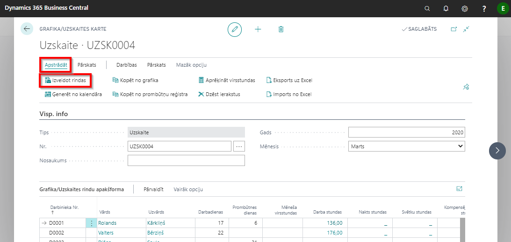
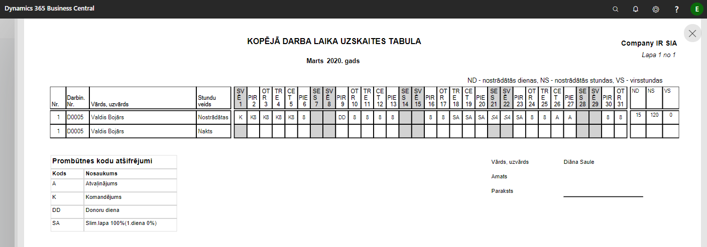
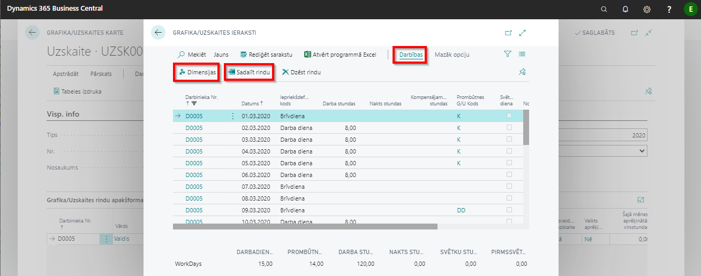
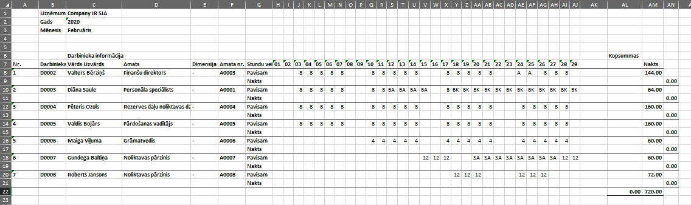
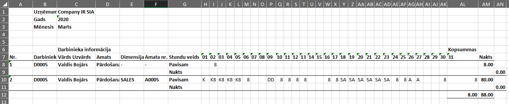
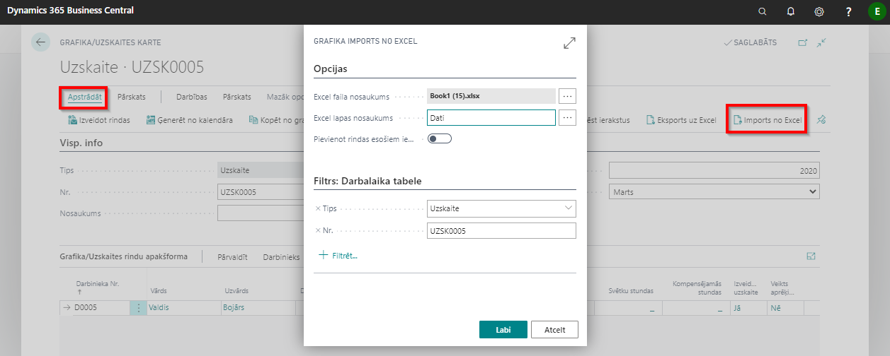

Uzskaite
Uzskaiti ģenerē mēneša beigās, kad ievadīti visi mēneša laikā pieņemtie darbinieki, iereģistrētas visas darba laika izmaiņas, vai arī mēneša sākumā, bet tādā gadījumā mēneša beigās saraksts noteikti jāpapildina ar mēneša laikā pieņemtajiem darbiniekiem. Datus uzskaites tabelē var kopēt no grafika, aizpildīt ar roku vai izmantot tabeles eksporta/importa funkciju uz/no MS excel (izveidot sistēmā darbinieku sarakstu, eksportēt uz excel, un tad importēt atpakaļ sistēmā).

Kodus, kurus izmanto darba laika un neierašanos atzīmēšanai, norāda Uzstādījumos.

Sākot darbu ar Uzskaites tabeli, programmā jābūt Uzskaites grafiku numuru sēriju uzstādījumiem: Lomu Centrs - Administrēšana - Algu uzstādījumi - cilne Numerācija - Uzskaišu numuri
Jauna Uzskaites tabele
Jaunu Uzskaites tabeli veido: Lomu Centrs - Uzskaites – poga Jauns. Numurs tiks piešķirts automātiski. Tālāk jāizvēlas Gads un Mēnesis, par kuru tiks veidota darba laika tabele (automātiski tiek aizpildīts ar tekošo gadu un mēnesi).
Darbinieku saraksta izveidošana
Darbinieku sarakstu Uzskaites tabelē ģenerē ar funkcijas palīdzību: Apstrādāt - Izveidot rindas, kā rezultātā uz ekrāna parādās darbinieku saraksts, saskaņā ar izveides loga izvēlētajām vērtībām. Nepieciešamības gadījumā var izmantot filtrus, lai sagrupēt darbiniekus dažādos sarakstos.
Dažādas tabeles aizpildīšanas iespējas
Dati no Grafika
Tabeli var aizpildīt ar plānoto stundu grafiku. Šim nolūkam izmanto funkciju Kopēt no grafika. Lai iegūtu pareizus datus par darbinieku prombūtni, izmanto funkciju Kopēt no prombūtņu reģistra, kā rezultātā Uzskaites tabelē iekopēsies dati no Prombūtnes reģistra – par piešķirtajiem atvaļinājumiem, slimību, bērnu kopšanas atvaļinājumu u.c. neierašanos. Gadījumā, ja vienā dienā darbiniekam jāreģistrē darba stundas ar dažādām dimensijām, var sadalīt stundas, nospiežot pogu Sadalīt rindu. Sistēma izveidos vēl vienu rindu, kurā jāievada stundas. Dimensijas var norādīt, nospiežot pogu Dimensijas.

Tabeles aizpildīšana MS Excel
Uzģenerēto Uzskaites tabeli eksportē (nosūta) uz Excel failu. Lai to darītu, Uzskaites tabelē obligāti ir jābūt ieģenerētam darbinieku sarakstam, bet saraksts var arī nebūt aizpildīts ar datiem no Prombūtnes reģistra. Tomēr Prombūtnes reģistra datu iekļaušana šajā tabulā atvieglos Uzskaites tabeles manuālo aizpildīšanu excel. Tabulas eksportēšana notiek, izmantojot funkciju Eksports uz Excel. Kad Uzskaites tabeles eksports uz Excel ir veiksmīgi pabeigts, tad jaunizveidotajā failā ir iespējams iekopēt datus no citiem uzskaites failiem vai aizpildīt datus par nostrādāto laiku manuāli. Importējot šo Uzskaiti atpakaļ programmā, visa ievadītā informācija tiks saglabāta. Jāievēro, ka jāaizpilda tie lauki, kuros paredzēts ievadīt stundas, brīvdienas, neierašanās.

Neierašanos kodi jāizmanto darba laika ievadīšanai izveidotajā failā tādi paši, kādi tiks atpazīti, importējot atpakaļ sistēmā aizpildīto failu. Ja kļūdas dēļ tiks ievadīti savādāki kodi, sistēma tos klasificēs kā Neattaisnotu neierašanos. Jāņem vērā, ka pirmā rinda satur kopsummas / faktiskas nostrādātas stundas , t. sk. nakts stundas (otrā rinda) un virsstundas rinda (trešā rinda). Šajā tabulā mēneša laikā ievada arī pieņemtos darbiniekus. Tam paredzētas brīvas rindas tabulas lejas daļā. Gadījumā, ja darbiniekam vienā dienā darba stundas ar dažādām dimensijām, Excel failā katrai dimensijai jābūt atsevišķi aizpildīts (sk. attēlu):

Uzskaites pārģenerēšana pēc pārskata mēneša
Saraksta pārģenerēšana sistēmā
Arī Uzskaites tabelē ir jāieģenerē tie darbinieki, kas pieņemti darbā mēneša laikā. To dara, izmantojot funkciju Izvaidot rindas. Rezultātā tiks pieģenerēti klāt tie darbinieki, kuri vēl nav šajā sarakstā. Ja nepieciešams, tiem pieģenerē arī datus no Grafika.
Saraksta papildināšana MS Excel
Ja tiek izmantota iespēja aizpildīt Uzskaites tabeli Excel, tad pārskata mēneša laikā šajā tabulā iespējams manuāli ievadīt visus pieņemtos darbiniekus. Tam paredzētas tukšas rindas saraksta beigās. Ja darbinieku saraksts sistēmā un excel tabulā sakrīt (kārtība var būt atšķirīga, bet darbinieku numuriem jābūt visiem iekļautiem), tad šīs tabulas imports atpakaļ programmā noritēs veiksmīgi.
Uzskaites imports no Excel
Nākamā mēneša sākumā, kad dati par tekošo mēnesi tabelē ievadīti, veic šīs tabeles importēšanu atpakaļ programmā. Uzskaites importēšanai atpakaļ programmā tiek izmantota funkcija Imports no Excel. Jāievēro, ka šī funkcija jāveic tajā Uzskaites tabelē, kura pirms tam tika eksportēta uz Excel.

Gadījumā, ja tiek izmantota uzskaite pa dimensijām, jāpievērš uzmanība, ka 1. darbinieka rindai jābūt izveidotai no sistēmas (bez dimensijas norādes) un tikai pēc tam jābūt rindai ar dimensiju. Gadījumā, ja ir ielikts ķeksis Pievienot rindas esošiem ierakstiem , sistēma tikai pievienos jaunus datus, nelabojot iepriekš aizpildītos datus.